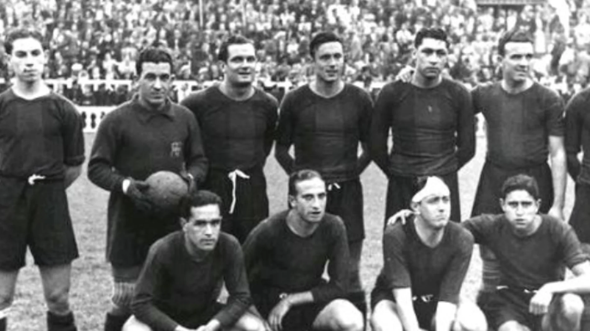
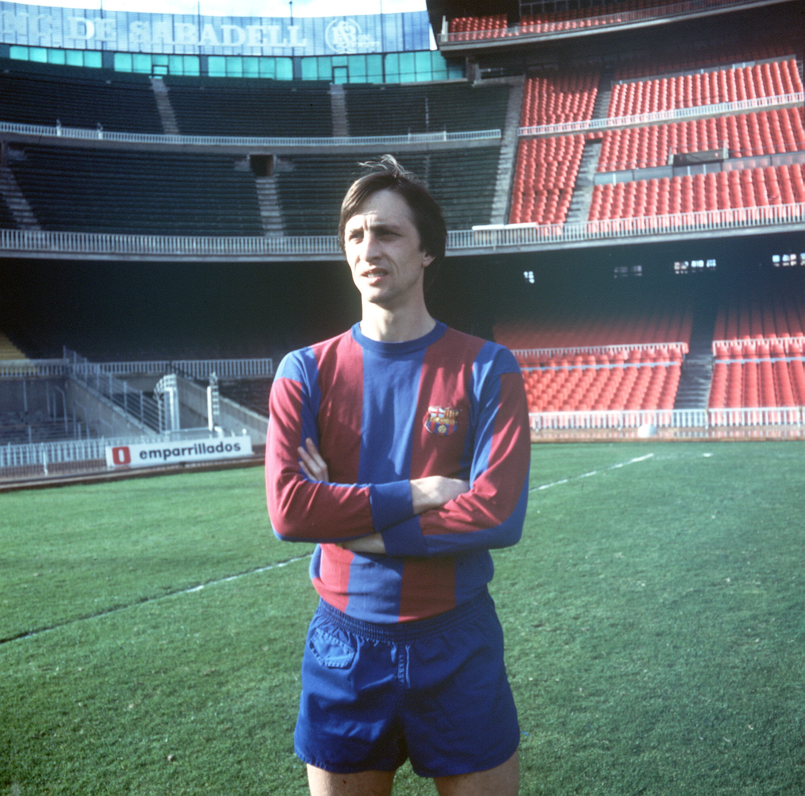

Historia del Club
Himno
El Cant del Barça (en castellano, Canto del Barça) es el nombre que recibe el himno oficial del Fútbol Club Barcelona. Fue estrenado en 1974 en el estadio del Camp Nou, con motivo de los actos de celebración del 75 aniversario del club. La letra fue escrita por Jaume Picas y Josep María Espinàs, y la música fue compuesta por Manuel Valls i Gorina. La versión oficial es interpretada por la Coral Sant Jordi. Está íntegramente escrito en lengua catalana. En los últimos años ha sido interpretado por reconocidos cantantes como Joan Manuel Serrat, con motivo de diferentes actos como la conmemoración del centenario del club. Además, la directiva presidida por Joan Laporta (2003-2010) ha incentivado que variados intérpretes y conjuntos musicales lo interpretaran en el estadio del Camp Nou, en los prolegómenos de los partidos de fútbol, versionándolo y adaptándolo a los más variados estilos musicales: pop, rock, rap, samba, hip hop, ska, rumba, j-pop. El Cant del Barça suena en las instalaciones de FC Barcelona cada vez que los equipos del club disputan un partido, poco antes del inicio del encuentro, y en el momento en que los jugadores saltan al terreno de juego. También suele sonar con motivos festivos y coreado por los aficionados para animar al equipo y festejar las victorias.
Nacimiento 1899-1922
EL Fútbol Club Barcelona fue fundado el 29 de noviembre de 1899 por un grupo de doce aficionados al fútbol, convocados por el suizo Hans Gamper mediante un anuncio publicado en la revista Los Deportes el 22 de octubre del mismo año. Entre los doce fundadores del club había seis españoles, tres suizos, dos ingleses y un alemán. El nombre original escogido fue Foot-ball Club Barcelona, en inglés, y se designó al suizo Walter Wild como primer presidente del club por ser la persona de más edad de entre las presentes. A finales de su primera década consiguió sus primeros títulos, una Copa de España y una Copa de los Pirineos. Durante los años 1910 el club dio un gran salto, tanto deportivo como social: ganó dos Copas de España y tres Copas de los Pirineos, y llegó a los 3000 asociados, convirtiéndose ya en una de las sociedades más populares de Cataluña. En aquellos años fue cuando se popularizó el apelativo de culés referente a los aficionados del club. El equipo jugaba sus partidos en un campo situado en la calle Industria de Barcelona, que se llenaba masivamente cuando jugaba el Barcelona, y desde la calle se veía cómo estaban sentados en las galerías hechas de madera, de espaldas, los aficionados situados en la parte más alta del graderío. La imagen desde la calle era la de una gran cantidad de traseros, por ello, a los aficionados del Barcelona se les comenzó a llamar culés.De esa década también cabe anotar que, en 1914, el club creó su primera sección polideportiva, la de atletismo. El 1 de enero de 1913 el club aceptó por primera vez a una mujer como socia, Edelmira Calvetó. En 1934 la periodista y atleta Ana María Martínez Sagi se convirtió en la primera mujer que formó parte de la junta directiva.

Club de Fútbol Barcelona 1957-1978
El estadio del F. C. Barcelona se convirtió en uno de los pocos escenarios públicos donde los aficionados se expresaban libremente, y el club se convirtió en el mejor embajador de Cataluña en el exterior. En aquellos años el presidente Narcís de Carreras en su discurso de toma de posesión en 1968, dijo que el Barcelona era más que un club en el sentir de los aficionados, frase que quedó ligada al club. Tras los éxitos de los años 1950 llegó la crisis de los años 1960, en los que el equipo de fútbol ganó 2 Copas del Generalísimo y 2 Copas de Ferias. Estos títulos, sin embargo, no lograron compensar la derrota en la final de la Copa de Europa de 1961 ni la crisis social generada por las marchas de Helenio Herrera y Luis Suárez al Inter de Milán, con los que el conjunto italiano ganaría dos Copas de Europa. En 1962 el gobierno de Franco autorizó la segunda recalificación urbanística y acabó con una deuda de 230 millones de pesetas y la más que posible desaparción del club azulgrana. Durante los años 1970 continuó el imparable aumento de socios del club: se pasó de los 55 000 a los 80 000. Fueron los años en los que el fútbol español abrió las puertas a los jugadores extranjeros y el club fichó a internacionales como Johan Cruyff, Johan Neeskens, Hugo Sotil, Hansi Krankl y Allan Simonsen. El equipo de fútbol conquistó en esa década una Liga española, 2 Copas del Rey, 1 Copa de campeones de Ferias y 1 Recopa de Europa. En 1978 llegó a la presidencia José Luis Núñez, quien dirigiría al club las siguientes dos décadas

La Era Guardiola 2008-2012
Con la llegada de Pep Guardiola al mando del equipo, el Barcelona pasó a la historia en la temporada 2008-09 tras conseguir el triplete conquistando la Liga, la Copa y la Liga de Campeones. Fue gracias al triunfo en la final de Roma ante el Manchester United por 2-0 que el Pep Team consiguió el triplete, convirtiéndose en el primer y único equipo español en haber logrado tal hazaña, y pasando al selecto círculo de clubes europeos que lo han logrado antes (Celtic, Ajax, PSV y Manchester United). Además el Barcelona se proclamó campeón de Europa contando entre sus filas con siete canteranos titulares en la final. El equipo de Pep Guardiola, además de alzarse con los tres principales títulos, logró superar las hazañas del Dream Team en cuanto a cifras conseguidas en Liga, batiendo varios récords de goles, partidos ganados como visitante, etc. Al inicio de la temporada 2009-10, el equipo ganó la Supercopa de España al imponerse al Athletic Club en ambos partidos. También logró la Supercopa de Europa al vencer al Shajtar Donetsk por 1-0. El equipo dirigido por Josep Guardiola, tras conquistar la Copa Mundial de Clubes ante Estudiantes de La Plata por 2-1, pasó definitivamente a la historia del fútbol mundial, al conseguir los seis títulos oficiales en un mismo año, una hazaña que no había sido lograda nunca antes por ningún otro club. El Barcelona de Guardiola consiguió en mayo de 2010 su segunda Liga consecutiva, con un total de 99 puntos, cifra que ningún otro club había alcanzado antes.